This site is best viewed in landscape mode for optimal chart display.
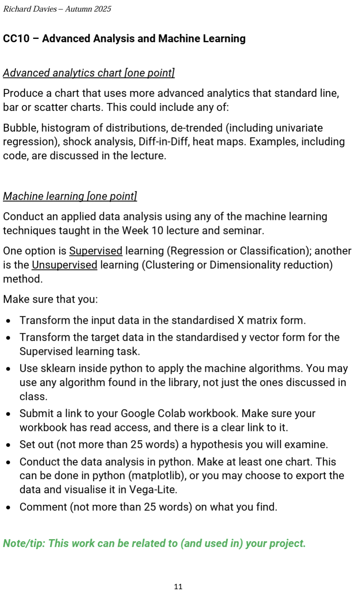
).This scatterplot matrix visualises the relationships between region fixed effects from a multivariate regression in my project against three features: topography rugged score, annual precipitation, and motorcycles per capita. Each subplot shows the scatterplot between two variables, along with a linear regression line to highlight trends. Histograms along the diagonal display the distribution of each individual variable. I chose a scatterplot matrix to effectively visualise potential correlations across multiple variables (more than two) simultaneously.
You can view the Jupyter Notebook on my GitHub: html (better for viewing) | notebook.
The dendrogram shows the hierarchical clustering of Italian cities based on various features related to road accidents and vehicle register composition. The coloured points at the bottom indicate the clusters formed when using KMeans for comparison. I used Plotly as I was not able to build a dendrogram with Altair.
You can view the Jupyter Notebook on my GitHub: html (better for viewing) | notebook.
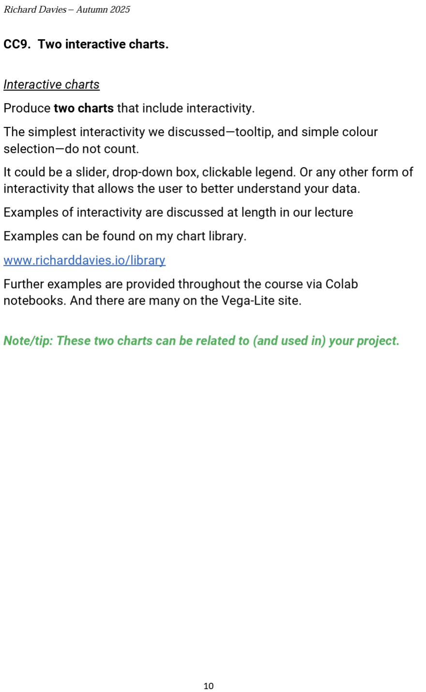
).This chart shows the trend of road accident casualties in Italy from 2010 to 2024, in aggregate or broken down by type of person (e.g., drivers, pedestrians). The user has the choice to select whether to display total counts or the rates per 100,000 inhabitants (which are crucial when comparing across regions). There is also a dropdown to select which types of casualties to display, and another one for the regions.
You can view the Jupyter Notebook on my GitHub: html (better for viewing) | notebook.
This interactive map (part of my final project) visualises various metrics for road accidents with injuries across Italian regions over a period of 15 years (2010-2024). There are different user controls to select the information displayed on the map. A challenge I faced is that apparently, because of file size, I cannot properly save and embed it as a JSON file. I had to save it and embed it as an HTML file instead.
You can view the Jupyter Notebook on my GitHub: html (better for viewing) | notebook.
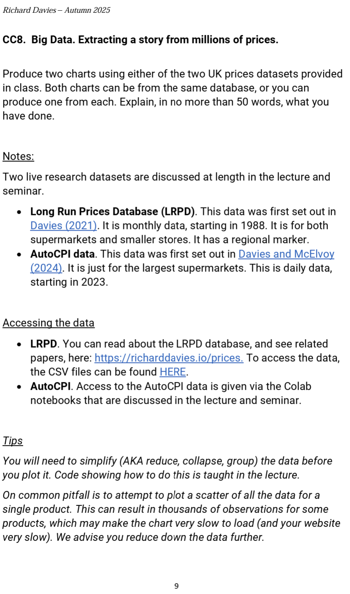
).I plotted the distribution of wine prices by type using data from the AutoCPI dataset. Since the distributions had a similar shape and covered similar price ranges, I chose to stack them when plotting them together. I added drop down menus to allow users to select the wine type (including all types) and the store (including all stores). To make it easier to visualise, I chose colours that corresponded to the wine types. Finally, I added a box plot on top, summarising key statistics for each distribution.
You can view the Jupyter Notebook on my GitHub: html (better for viewing) | notebook.
I plotted the history of wine prices by type using data from the Long Run Prices Database (LRPD). I chose to visualise key quantiles of the price distribution over time for each wine type. I avoided plotting mins and maxs because of the presence of outliers in the data, particularly on the maxs side. As before, to make it easier to visualise, I chose colours that corresponded to the wine types. Finally, I added a dropdown menu to allow users to select the wine type.
You can view the Jupyter Notebook on my GitHub: html (better for viewing) | notebook.
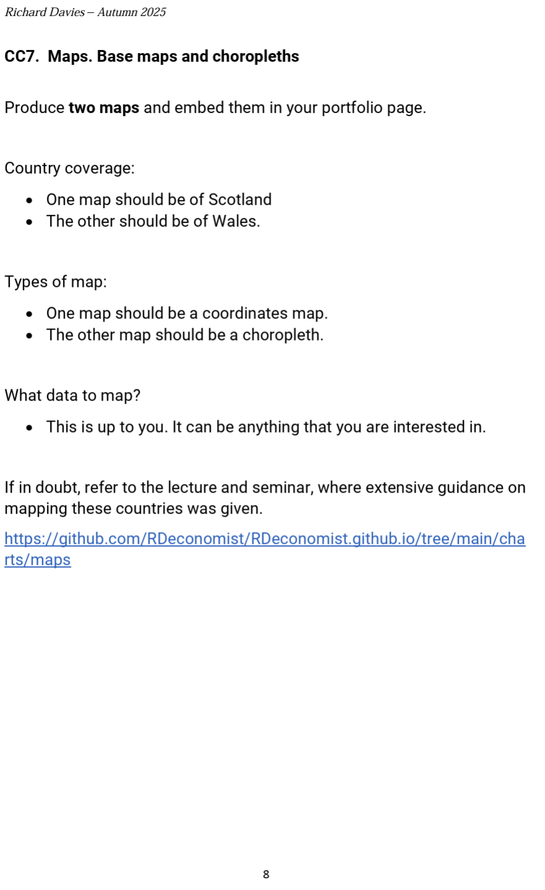
).A decision I made when building this map was to keep the colour scale constant across the four years, in order to be able to visualise changes over time, and not just the differences across regions.
You can view the Jupyter Notebook on my GitHub: html (better for viewing) | notebook.
For this map, I chose to focus on the Community Safety domain of the 2025 Welsh Index of Multiple Deprivation (WIMD). To switch between the different indicators, I used a dropdown menu that updates the map.
You can view the Jupyter Notebook on my GitHub: html (better for viewing) | notebook.
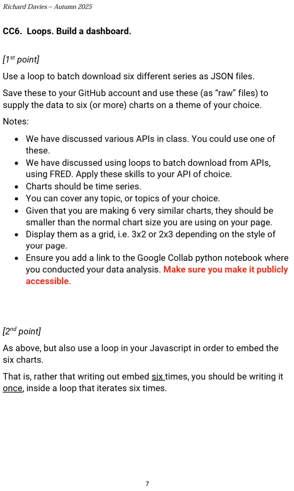
).
This dashboard displays education expenditure as a percentage of GDP for all 27 EU member states.
Data is sourced from the World Bank API and shows historical trends from 1995-2023.
The charts are generated using a loop to batch download data from the API 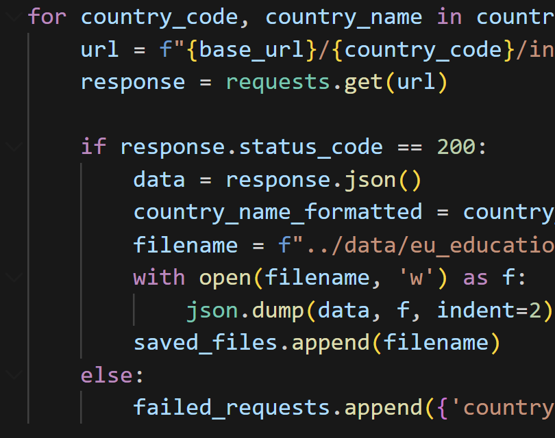 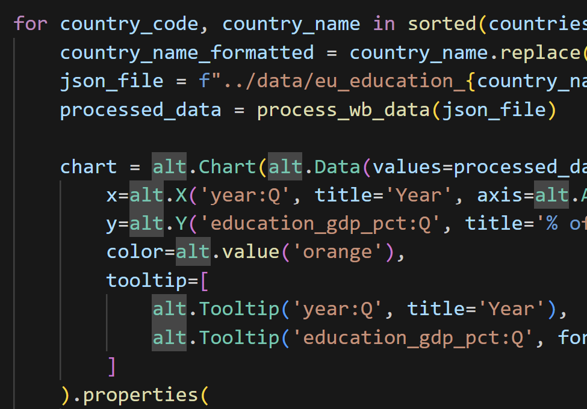 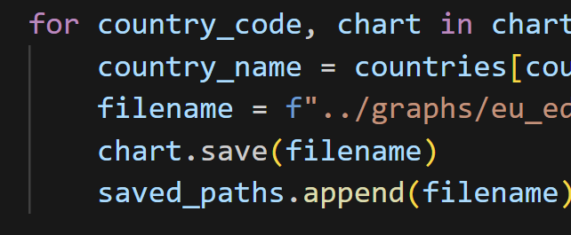 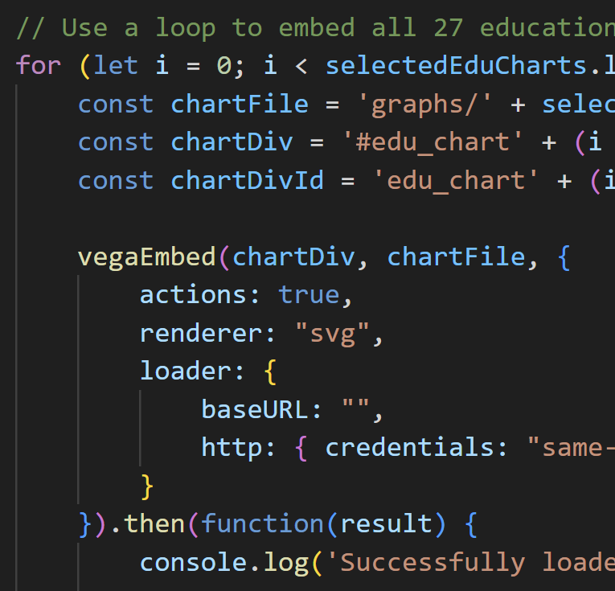
You can view the Jupyter Notebook on my GitHub: html (better for viewing) | notebook.
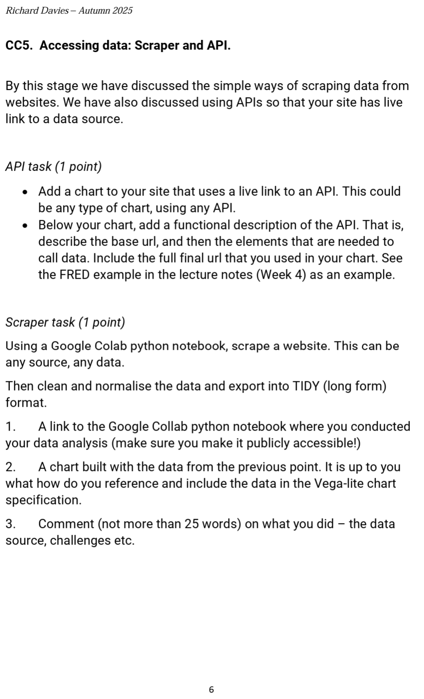
).For this visualisation, since I am working with three data sources (two series from the World Bank API and a country-continent mapping table), I found it difficult to build it with Vega-Lite. Hence, I worked with Vega. I left the possibility open to select several years into the future in the slider, as the API series should continue updating their data. The API is not so reliable; I found that sometimes I had to refresh the page in order for the data to be plotted. Therefore, I added code so that if the visualisation is empty it automatically attempts to reload the data.
I include a functional description of the APIs I used here 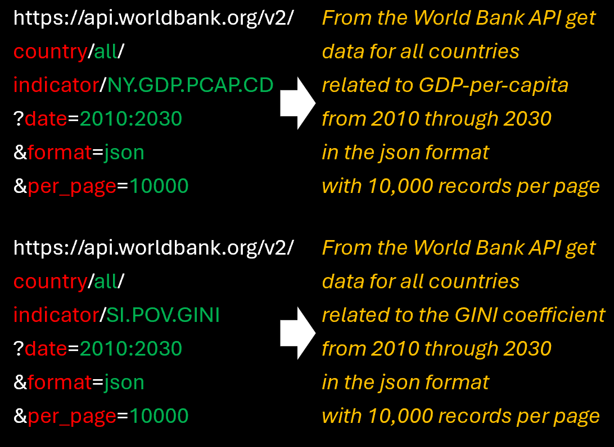
You can view the Vega spec on my GitHub here.
This interactive globe visualization displays taxation systems and tax rates for countries worldwide (select from the Metric dropdown menu), scraped from Wikipedia using BeautifulSoup. The data includes taxation system types (Citizenship-based, Residential, Territorial, No income tax), corporate tax rates, individual income tax ranges, and VAT/GST/Sales tax rates. Use the rotation sliders to view different regions, and hover over countries to see detailed tax information. One of the challenges I faced related to differences in country names between the scraped data and the globe.
You can view the Jupyter Notebook on my GitHub: html (better for viewing) | notebook.
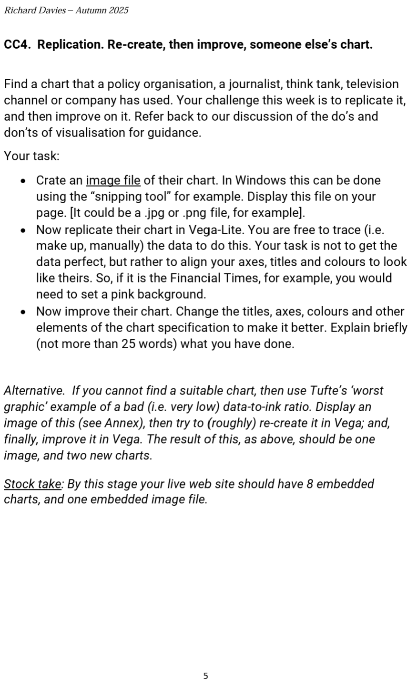
).
The first chart I looked at was published by The Economist and can be seen here 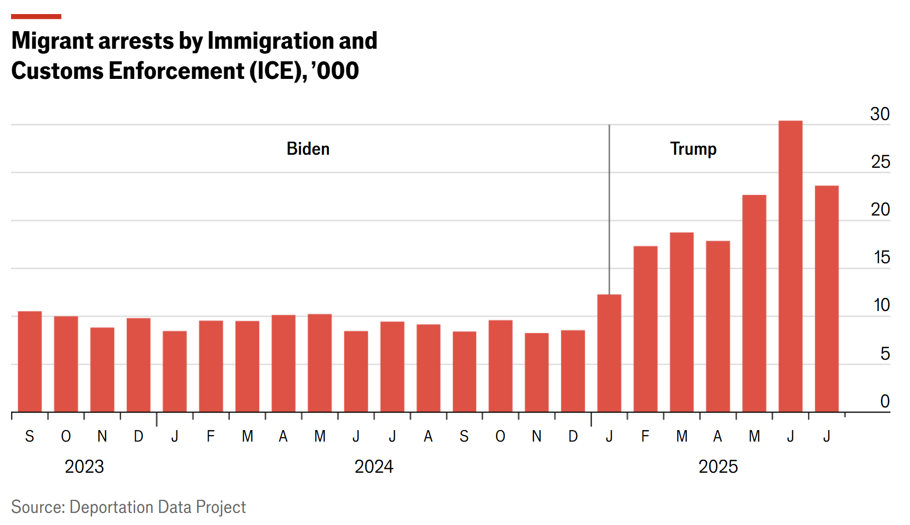
The visualisation on the right has a dropdown menu to select between the reproduced chart and the modified chart. I made the Biden months blue (associated with the U.S. Democratic Party), and the Trump months red (associated with the U.S. Republican Party). I also added a dashed baseline, which corresponds to the average during the Biden months. The tooltips during the Trump months break down the figures: Biden's baseline plus the Trump Administration's excess over the baseline.
You can view the Jupyter Notebook on my GitHub: html (better for viewing) | notebook.
The second chart I looked at was also published by The Economist and can be seen here 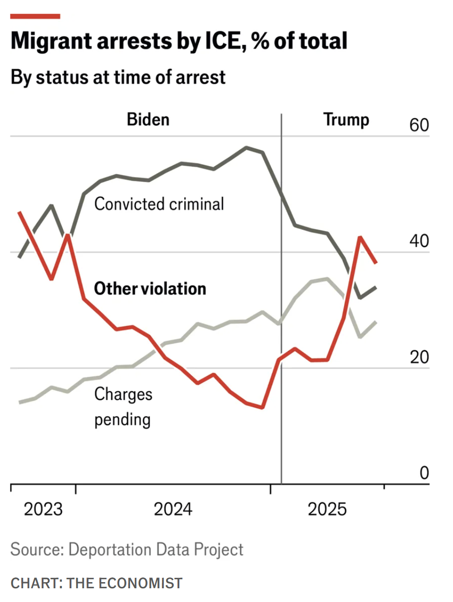
Since my modifications to this chart change the graph type, I was not able to combine the reproduced and modified charts into one visualisation through a dropdown menu. Thus, these are two separate charts. To the right is the reproduced chart. Below is the modified chart, along with my discussion.
A reader studying the original chart with the breakdown of percentages of the total would need an additional graph showing the totals in order to fully understand the figures. Otherwise, the reader would not know, for example, if the actual number of arrests concerning convicted criminals actually increased or decreased during the Trump Administration. A stacked column chart like the one I propose gives all this information in one visualisation.
You can view the Jupyter Notebook on my GitHub: html (better for viewing) | notebook.
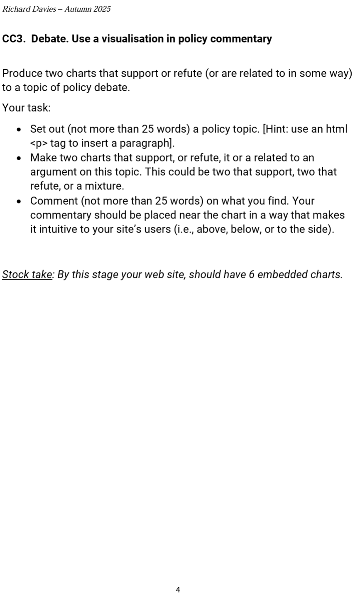
).Is the EU on track to meet its emissions targets? In this chart, we visualise the EU-27's CO2 emissions over time, highlighting the key targets set for 2030 (55% reduction of level in 1990) and 2050 (net zero). I project the 2004-2024 trend (we see consistent declines in emissions over that period) all the way to 2050. This graph shows that, if the trend continues, the EU may come close to meeting the 2030 target, but will likely fall considerably short of the 2050 net zero goal. This means that policies must be tightened, or targets need to be adjusted.
You can view the Jupyter Notebook on my GitHub: html (better for viewing) | notebook.
Where should the EU focus its efforts to reduce emissions? This chart breaks down the EU-27's CO2 emissions by source, showing that if present trends continue, the only emissions source that will reach net zero by 2050 is coal, which would reach it by 2041. Other sources would take much longer, beyond the 2050 target year: cement in 2061, oil in 2085, other industry in 2087, gas in 2118, and flaring in 2125.
You can view the Jupyter Notebook on my GitHub: html (better for viewing) | notebook.
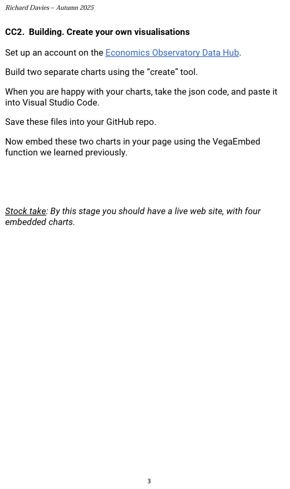
).
The chart shows the USA productivity index over time since the late 1940s, with 2012 as the reference year.
It was built using the "Create" tool from the Economics Observatory (see specifications 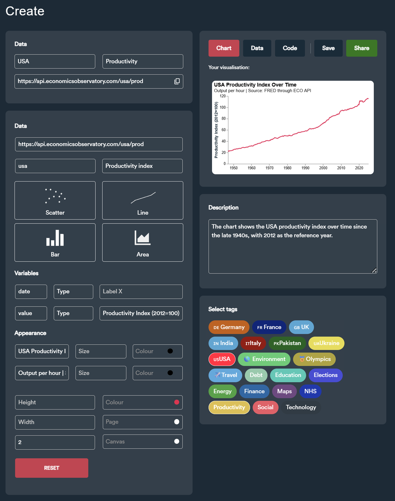
You can view the Vega-Lite spec on my GitHub here.
The chart shows the USA real weekly wage over time since the late 1970s (1982-84 CPI Adj.).
It was built using the "Create" tool from the Economics Observatory (see specifications 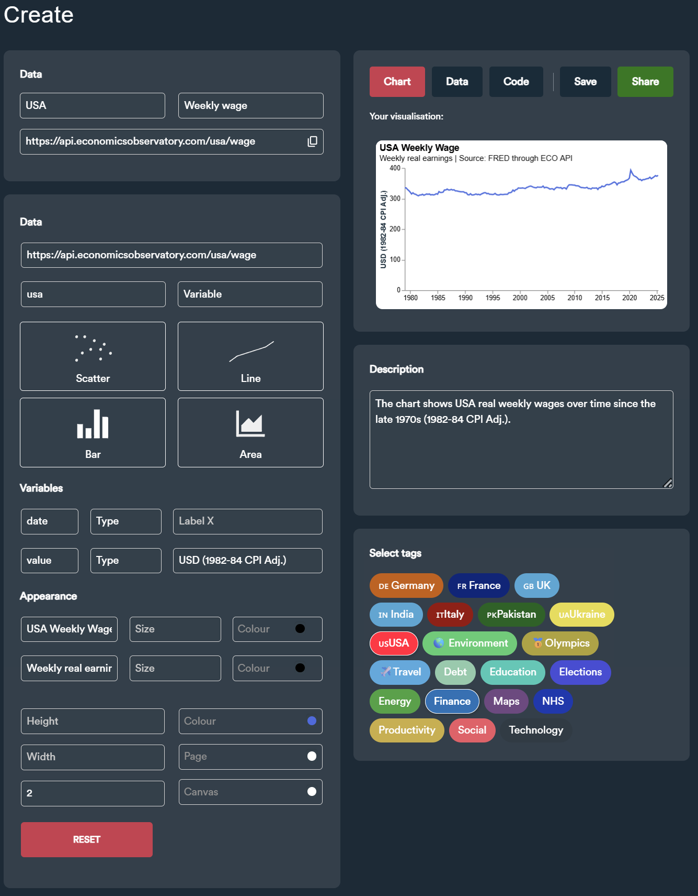
You can view the Vega-Lite spec on my GitHub here.
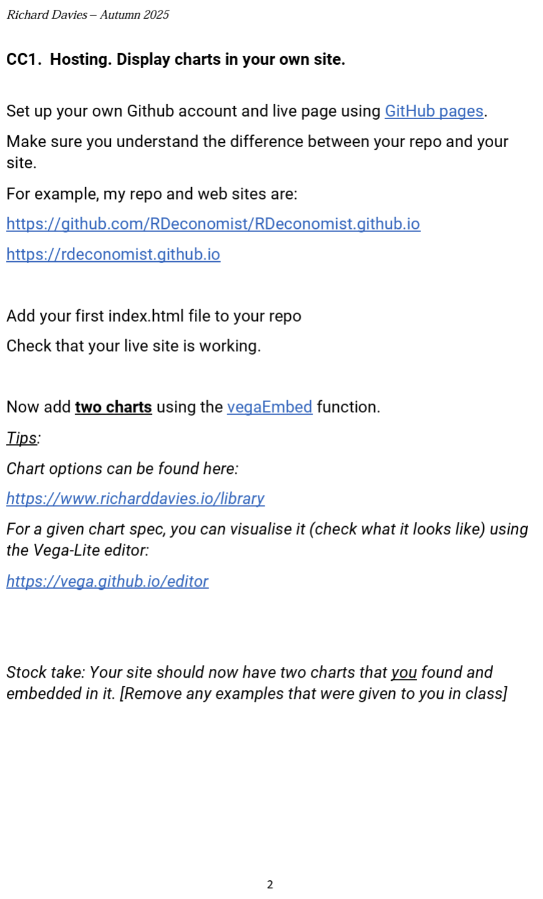
).I embedded a graph I built. Here, I combined two data series obtained through the World Bank API. Even though they were on different scales, I made sure that both axes were aligned so that, for example, the number 3 on the Fertility Rate axis corresponds to the number 30,000 on the GDP per Capita axis. I formatted the GDP per Capita numbers to use a "," as a thousands separator, including those in the tooltip.
You can view the Vega-Lite spec on my GitHub here.
I embedded a graph I built. In this chart, I plotted the same series obtained through the World Bank API, the unemployment rate, for various countries. Given that the chart looks somewhat crowded, I added the functionality to isolate a line by clicking on it using a condition inside the opacity property. Unfortunately, this functionality from VegaLite does not appear to function so well on a mobile browser.
You can view the Vega-Lite spec on my GitHub here.